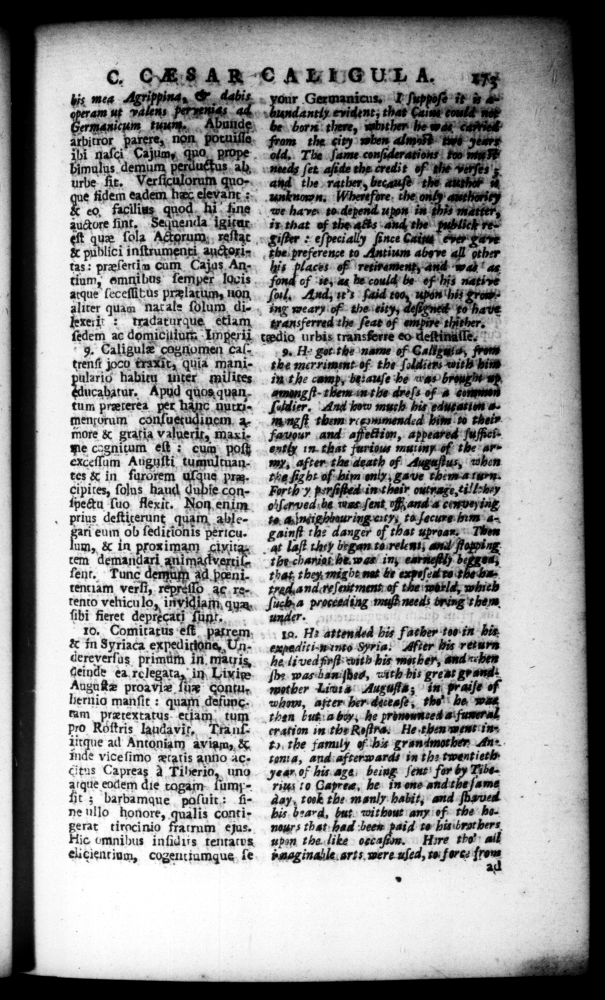

aſci Cajumy, 'y doe u Uucaharur, pud quos quantum præterea pet han men;orum confuetudinem, amore & gratia valuerit, ay e cagnitum et: cum po lim Auguſti tumultuantes & in furorem . pra. cipites, ſolus haud dubie conſpectu ſuo flexit. Non enim . prius deſtiterunt quam, ablegari eum ob ſedicionis pericu. um, & in proxzimam £lvitas _ tem demandari animadverril ſent. Tune demu ad. penitentiam verſi, repreſſo ac. retento vehiculo, invidiam; qu: ſibi fieret deprecati ſunt. 10, Comitatus eſt patrem & in Syriaca exped iione, Undereverſus primum in, matris, geinde ea relegata, in Livige Auguſtæ proavie ſux contu. hernio manſit : quam defunctam prætextatus SA, my pro Roſtris laudavit, Tranſiitque ad Antoniam aviam, & mde vice ſimo ætatis ano ac. citus Capreas Aa Tiberio, uno atque eodem die tagam famyfit ; barbamaue paſuit: fine ullo honore, qualis conti gerat tirocinio fratrum ejus. Hic omnibus inſidits tentatus elicient ium, cogentiumque ſe. jnenda_ igitur 5x hanc nutri115 | n 7: 17173 — 9 thither, fro — rites 10 Capree, he in one and ame day, took the manly habit, and ſbaved bis b:ard, but. without any ef rhe banaurs that bees paid ts bis brut herupon the like ogca Hire the all baaginalle arts mere uſed, to force *
